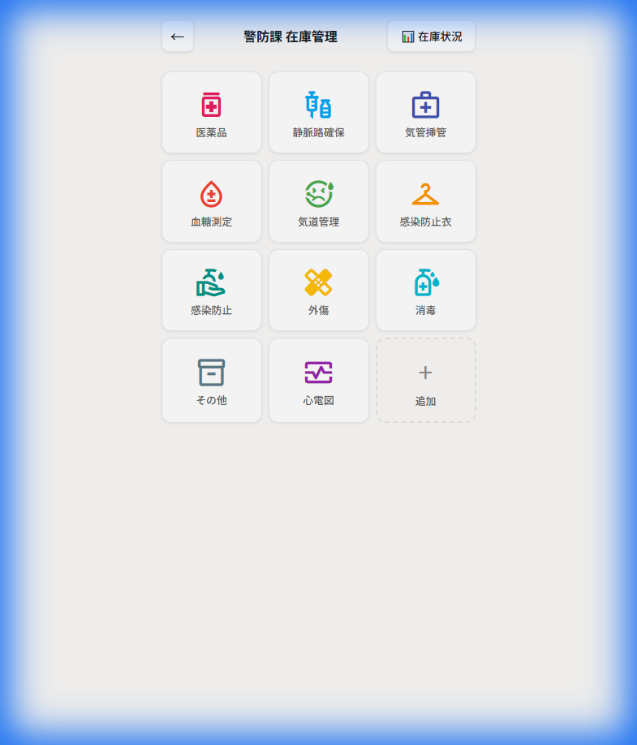
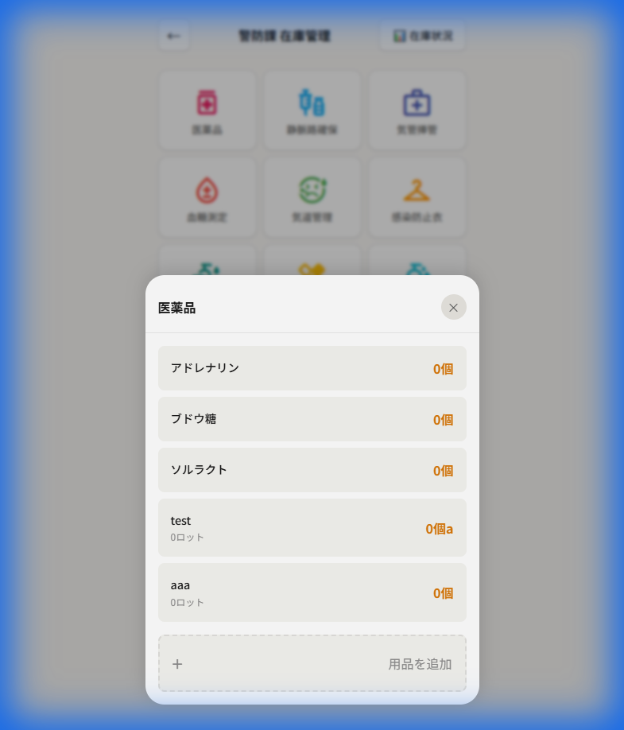

← アプリに戻る
このアプリは、消防署の救急用品在庫をスマートフォンやパソコンで簡単に管理できるシステムです。
1
部署の選択（ホーム画面）
アプリを開くと、最初に部署選択画面が表示されます。

操作方法
- 自分の部署のボタンをタップします
- 選択した部署のダッシュボードに移動します
画面下部のメニュー
| ボタン |
機能 |
| 📊 在庫状況・使用履歴 |
全体の在庫状況と使用履歴を確認 |
| ⚙️ カテゴリ・用品設定 |
カテゴリや用品の追加・編集・削除 |
| 📖 使い方ガイド |
このマニュアルへのリンク |
2
カテゴリの選択（ダッシュボード）
部署を選択すると、用品カテゴリの一覧が表示されます。

操作方法
- カテゴリのタイルをタップして、そのカテゴリの用品一覧を表示します
- 右上の 「在庫状況」 をタップすると、この部署の在庫サマリーを確認できます
- 「＋追加」 タイルをタップすると、新しいカテゴリを追加できます
- 「←」 ボタンで部署選択画面に戻ります
カテゴリ一覧（例）
- 医薬品、静脈路確保、気管挿管、血糖測定、気道管理
- 感染防止衣、感染防止、外傷、消毒、その他、心電図
3
用品一覧の確認
カテゴリをタップすると、そのカテゴリに登録されている用品の一覧が表示されます。

表示内容
| 項目 |
説明 |
| 用品名 |
アドレナリン、ブドウ糖 など |
| 現在庫数 |
右側に「◯個」と表示 |
| ロット数 |
使用期限が設定されている用品は「◯ロット」と表示 |
操作方法
- 用品名をタップ → 入庫・出庫画面を開きます
- 「＋用品を追加」 → 新しい用品をこのカテゴリに追加します
- 「×」ボタン → 一覧を閉じてダッシュボードに戻ります
4
入庫・出庫の記録
用品をタップすると、入庫・出庫を記録する画面が表示されます。

画面構成
| 項目 |
説明 |
| 現在庫 |
現在の在庫数が表示されます |
| 入庫 / 出庫 |
どちらの操作かを選択します |
| 入庫日（出庫日） |
日付を入力します（デフォルトは今日） |
| 数量 |
「−」「＋」ボタンまたは直接入力で数量を指定 |
| 備考 |
メモを入力できます（定期補充、救急活動で使用 など） |
| 署所間移動 |
他の部署からの受け取り、または他の部署への譲渡を記録 |
📥 入庫（補充）の場合
- 「入庫」 が選択されていることを確認
- 入庫日 を必要に応じて変更
- 数量 を入力
- 必要に応じて 備考 を入力
- 「保存」 をタップ
📤 出庫（使用）の場合
- 「出庫」 をタップして切り替え
- 使用期限のある用品は、出庫するロットを選択
- 数量 を入力
- 必要に応じて 備考 を入力
- 「保存」 をタップ
🔄 署所間移動の場合
- 「署所間移動」 にチェックを入れる
- 相手先の部署を選択
- 通常通り保存
5
カテゴリ・用品の設定
ホーム画面下部の 「カテゴリ・用品設定」 をタップすると、設定画面が開きます。

カテゴリ一覧
- 登録されているすべてのカテゴリが表示されます
- 「＋追加」ボタン で新しいカテゴリを追加
- ✏️（編集アイコン） でカテゴリ名・アイコンを変更
- ×（削除ボタン） でカテゴリを削除（関連する用品も削除されます）
カテゴリ内の用品管理
- カテゴリ名をタップすると、そのカテゴリ内の用品一覧が表示されます
- 「＋このカテゴリに用品追加」 で新規用品を追加
- 各用品の編集・削除も可能です
新規カテゴリ追加
- 「＋追加」 ボタンをタップ
- カテゴリ名を入力
- アイコンを選択
- 「保存」 をタップ
新規用品追加
- 該当カテゴリを開く、または設定画面から追加
- 用品名を入力
- 単位を設定（個、本、枚 など）
- 「使用期限あり」 トグルを必要に応じてON
- 最低在庫数を設定（任意）
- 「追加」 をタップ
💡
よくある操作フロー
📥 定期補充を記録する
- 部署を選択
- カテゴリを選択
- 用品をタップ
- 「入庫」を選択
- 数量を入力
- 備考に「定期補充」と入力
- 「保存」をタップ
📤 救急活動での使用を記録する
- 部署を選択
- カテゴリを選択
- 使用した用品をタップ
- 「出庫」を選択
- ロットを選択（期限管理のある用品）
- 数量を入力
- 備考に「救急活動で使用」と入力
- 「保存」をタップ
📊 在庫状況を確認する
- ホーム画面で「在庫状況・使用履歴」をタップ
- 全部署の在庫サマリーを確認
- または特定部署のダッシュボードで「在庫状況」をタップ
❓
お問い合わせ
操作でご不明な点がありましたら、管理者までお問い合わせください。